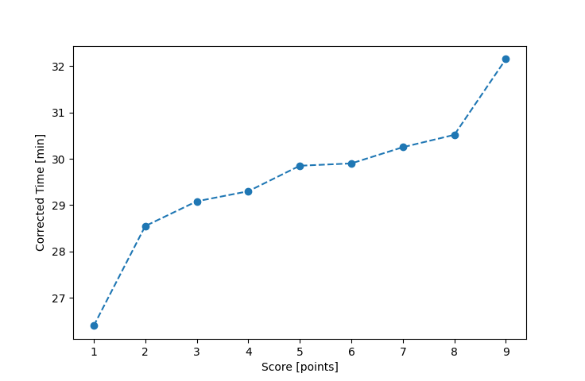

| Wind: | 2-3 (BFT) |
|---|---|
| RC: | David_Bu, Bill_P |
| Date: | September 09, 2018 |
| Notes: | F2 Starboard |
| Rank / Score | Name | Boat | Input Time [mm:ss] | Input Offset [mm:ss] | Race Time [mm:ss] | Race Time [s] | Handicap | Corrected Time [s] | Corrected Time [mm:ss] |
|---|---|---|---|---|---|---|---|---|---|
| 1.0 | Ron_F | F5 | 25:30 | 00:00 | 25:30 | 1530 | 0.96600 | 1584 | 26:24 |
| 2.0 | Mike_F | SF | 28:40 | 00:00 | 28:40 | 1720 | 1.00400 | 1713 | 28:33 |
| 3.0 | Rod_H | PUF | 32:31 | 00:00 | 32:31 | 1951 | 1.11800 | 1745 | 29:05 |
| 4.0 | Art_M | SWSX | 28:06 | 00:00 | 28:06 | 1686 | 0.95900 | 1758 | 29:18 |
| 5.0 | Ella_M | LASE | 27:33 | 00:00 | 27:33 | 1653 | 0.92300 | 1791 | 29:51 |
| 6.0 | Chris_E | SF | 30:01 | 00:00 | 30:01 | 1801 | 1.00400 | 1794 | 29:54 |
| 7.0 | Nedra_F | SF | 30:22 | 00:00 | 30:22 | 1822 | 1.00400 | 1815 | 30:15 |
| 8.0 | Jay_H | SWSX | 29:16 | 00:00 | 29:16 | 1756 | 0.95900 | 1831 | 30:31 |
| 9.0 | Lewis_V | BCN | 27:58 | 00:00 | 27:58 | 1678 | 0.87000 | 1929 | 32:09 |

Application Notes:
All race results are unofficial
View source code at https://github.com/cessnao3/portsmouthracecalc/